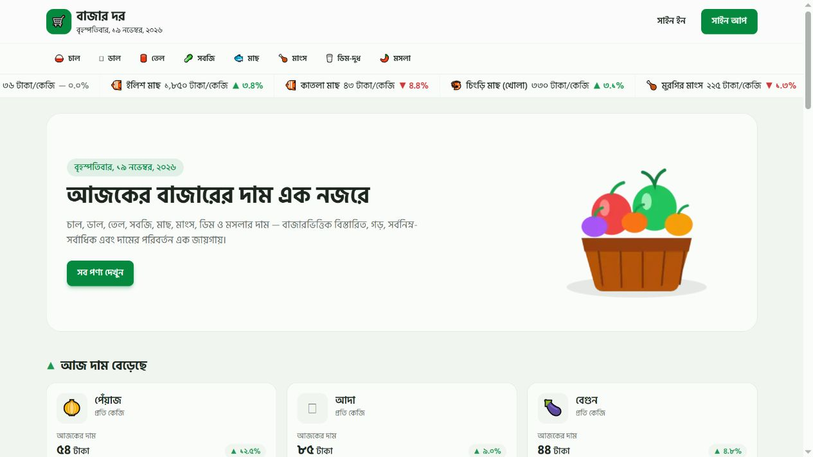

Daily Market Price Tracker
Bazar Dor
A Bangla-first tracker of everyday essential prices across 12 bazars in six divisions of Bangladesh. It brings daily changes and market-by-market comparisons into one interface.

Technology stack
What it does
- Follow daily changes through a scrolling price ticker and the top six risers and fallers.
- Browse eight categories and sort prices correctly, including prices written with Bengali numerals.
- Access protected product pages with minimum, maximum, and average prices plus a market-wise comparison table.
- Use email/password, Google, or GitHub authentication and manage profile information.
Development challenges
Technical challenges reflected in the project's features and implementation:
- Normalizing Bengali numerals and formatted prices for numeric sorting while preserving Bangla presentation.
- Protecting product and profile routes and returning visitors to their destination after sign-in.
- Coordinating the price ticker, market comparisons, and loading and empty states on small screens.
Potential improvements
Suggested next steps for a future version:
- Add historical price charts with selectable time ranges.
- Offer saved products and optional price-change alerts.
- Make data freshness and price-source information easier to inspect.